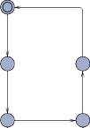
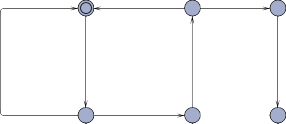
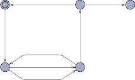
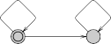
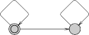
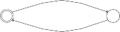

Lecture
Topics:
Introduction to real-time systems, motivation and validation techniques
Introduction to Uppaal: modelling, simulation and verification of timed automata
Readings
Read Chapter 1 of [Shaw] for a general view of real-time systems.
Read Chapter 1 of [LO] (Laplante & Ovaska) for a another view of real-time systems.
Skim Chapter 1 (pages 1–18) in [BK] (Baier & Katoen) for a motivation for the formal approach to real-time validation adopted in this course.
Read sections 1-3.2 in [Upppal-ST] (Small Tutorial) for a gentle introduction to the Uppaal tool.
All of these texts are to be found in the Week 01 module on DTU Learn.
Exercises
The main purpose of these exercises is that you get acquainted with the Uppaal system, in particular the editor and the simulator. Today’s focus is on untimed models.
Before the class, you should install 4.1.26 of the Uppaal tool found at http://uppaal.org
Exercise 1: Simple Light Control
Start Uppaal and open the file for the simple light control system presented at the lecture (SimpleLight.xml from the Week 01 module on DTU Learn) and experiment with the system, in particular, with the simulator.
Make a more refined light control system, where the light can be off, dimmed or bright. The On button should be used to toggle between the two light modes (dimmed and bright). You may decide yourself which light mode is entered initially. Model the system in Uppaal and experiment using the simulator.
Enhance the light control system to return to the last light mode used (dimmed or bright) when being switched on again.
Now, enable fine-grained dimming of the light control such that there are five levels of dimmed light between off and bright. Use a local state variable to represent the degree of dimmedness. You may add extra buttons for dimming control, if you like.
Exercise 2: Goat/Wolf/Cabbage Puzzle
A man is travelling with a goat, a wolf and a cabbage. They reach one shore of a river which they must cross using a little boat.
Unfortunately, the boat can carry only the man and one of the others. Furthermore, if the goat is left unattended with the cabbage, the goat will eat the cabbage, and if the wolf is left unattended with the goat, the wolf will eat the goat.
You are now going to make some Uppaal models of the system:
First make a model which allows for all scenarios of transportation — whether unsafe or not. Simply model what is physically possible whether sensible or not.
The model should have an automaton for each of the man, the wolf, the goat and the cabbage which clearly shows the position of the item. Initially, they should all be on the same shore. Use synchronization on dedicated event channels to model the man taking a particular item from one shore to another.
Try to use the simulator to device a safe way (where nobody is eaten) of crossing the river. Here, you are controlling the will of the man by selecting among the possible moves.
In the Uppaal Verifier tab, formulate an invariant as a Uppaal query of the form:
A[] φ
where φ is a state predicate you write expressing that nobody is in the risk of being eaten. This query asks whether all execution paths (A) will satisfy this at all ([]) points of time. You may use P.L to express that process P is currently at location L and combine such with the usual boolean operators.
Use the Uppaal verifier to check the invariant (which will fail, of course). In the Options menu enable diagnostic trace (shortest) and after the verification, run the diagnostic trace in the simulator to see how the invariant may fail to hold.
Now give the man some common sense. This means that he should never leave somebody behind to be eaten. For this, the man must be equipped with some perception of the current state. Since in Uppaal, it is not possible for one process to refer to the inner workings of other processes, the man must build his own idea of where the items are, stored in some local state variables. (You might imagine the man to be blind.) Using his memory, he may now make safe (but not necessarily clever) decisions.
The query from above should now be satisfied. Is it? Once done, you may try out a query of the form:
E<> ψ
where ψ is a state predicate you write expressing that all have (safely) arrived on the oppostite shore. This query asks whether there exists an execution path(E) where eventually (<>) ψ holds. If so, you can run it in the simulator to see a solution to the puzzle.
(Optional) The man may still make a number of useless sailing trips. Try to equip the man with some “intelligence” in the form of a plan for the journey, possibly using a “stage” variable. With this, you should be able to verify
A<> ψ
which states that all execution paths will now lead to the desired state.
When working with untimed models, for the verification to work as expected you must force the system to take transitions by marking the states as urgent (using right-click). In this case it is only necessary for the Man, who is the driving force in the system. The technical reasons behind this will be explained later in the course.
Lecture
Topics:
Discussion of Week 1 Exercises
Introduction to timed automata: syntax and semantics
Timed automata in UPPAAL
Modelling with timed automata
Readings
Read section 9.1 (pages 673-698) in [BKch9TA].
Read sections 1–3 (skipping 2.2 and 2.3 for now) in [UPPAAL].
Both of these texts can be found on DTU Learn.
Exercise 1: Skew and Jitter
In this exercise you are going to model two undesired, but common, phenomena of real- time systems. In both cases we are considering a process which (ideally) is supposed to repeatedly emit a signal with a constant period of 10 time units.
If the physical clock of a system is not running at the correct rate, the system may suffer from skew, where the signals may get more and more displaced from their correct nominal times.
Make a UPPAAL model of the behaviour of the process if the clock rate may deviate from the nominal rate with ±10 % (changing dynamically in within these bounds).
What is the maximum and mininum distance which may be observed between the first and the last of five consecutive signals?
Even if the clock is running precisely, the output of a process may be displaced due to internal data handling. The delay of the output with respect to the nominal times is called jitter. Jitter is commonly experienced in the end-user presentation of video and/or audio streams and may reduce the quality significantly.
Make a UPPAAL model of the process where the output may suffer jitter up to 1 time unit.
What is the maximum and mininum distance which may be observed between the first and the last of five consecutive signals?
Hint: Use a channel for the signal event and introduce an observer who accepts signals at any time.
Exercise 2: Pelican Crossing
A road with heavy traffic has a pedestrian crossing with a traffic light which may stop the traffic on request of the pedestrians (aka. a pelican crossing ). The light should stop the traffic for a period of 15 seconds to enable all pedestrians to cross. The traffic stop is requested by pressing a button.
To avoid a total traffic stop, an overall requirement is that traffic must not be stopped for more than 20 % of the time.
Make a UPPAAL model of the pelican light control (and some pedestrians to operate it) such that pedestrians are eventually allowed to cross and the traffic not stopped too much. (Amber light periods may be ignored.)
Exercise 3: Coffee Machine
In this exercise we will design the control of a Machine which will serve a coffee-craving Person, and a Follower who will check that the Person produces tweets (on Twitter) often enough. The Person repeatedly inserts a coin, takes a short break, gets back to extract the coffee, sips it for a while and finally emits a tweet. Each of these activities takes a certain amount of time as specified by the following model of the Person:

coin! y:=0
tweet!
y==3
coffee? y := 0
y>=2
y<=5
[Can be found in the model file Coffee0.xml]
The machine takes varying time to brew the coffee after a coin has been inserted, and will time-out if the coffee has not been taken before a certain upper time-limit. As a requirement we want the overall behaviour to ensure a minimum flow of tweets within the system. Solve the following tasks in UPPAAL:
Model the Machine such that it will react on the Person inserting a coin, then brew coffee for [tmin, tmax] minutes, and finally offer the coffee to the Person, or discard the coffee if it has not been taken after tlim minutes (once brewed). Assume that the Person will try to insert coins and retract the coffee as soon as possible.
Hint: Pass the constants tmin etc. as parameters to be determined by the system instantiation, so that they can be easily changed.
Create a Follower that checks how often the Person produces a new tweek and who might get disappointed if at any time more than 10 minutes elapse between two consecutive tweets. Assume that the Person will emit his tweets as soon as they are ready.
Analyse the behaviour of the system, and try to determine (by calculations) the constraints that the parameters tmin, tmax, and tlim must satisfy for the system to work without deadlocks or disappointments.
(Optional) Verify your results by formulating suitable invariants and show that they hold/do not hold as expected, when varying the parameters.
Lecture
Topics:
Discussion of Week 2 Exercises
Introduction to Computation Tree Logic (CTL)
Introduction to Timed Computation Tree Logic (TCTL)
The query language of UPPAAL
Readings
Read sections 3.1, 3.2, 3.3, 3.4 (pages 148– 172) in Logic in Computer Science: Mod- elling and reasoning about systems, by M. Huth and M. Ryan,Cambridge University Press, 2000.
Read sections 2.2 and 2.3 in [UPPAAL]. A fast reading of 2.3 suffices for now. We will address committed locations later.
Both of these texts can be found on DTU Learn.
Exercise 1: Simple Access Control
This exercise looks at a simple access control system for mobile phones consisting of an AccessControl process and a User process:

x<=100
x==100
pinvalue != 0 and pincode! pinvalue != pin pinvalue := 0
success! x:=0
poweroff!
pinvalue == pin
quit?

poweroff?
pincode?
success?
pincode?
pinvalue := 1234
quit!
AccessControl
pinvalue := 1235
User
The interactions between User and AccessControl are modelled by means of synchroniza- tion channels and integer variables. Download the file mobile.xml from Learn, and solve the following tasks using UPPAAL:
Simulate the system and find out how it works.
Verify that it always holds that if the user is using the phone then she has entered the correct pin-code.
Verify that the user only receives a poweroff if she has used the phone for 100 or more time units.
Verify that if the AccessControl is Working, then the user is Using the phone.
The system has a deadlock. Verify this by using Uppaal’s special property deadlock. Modify the two models such that the locations PowerOff and Init in both processes can be combined, i.e., the location Init corresponds to that the power is off. Verify that the modified system is not deadlocking.
Modify the models such that when the clock x reaches 100 time-units, the Access- Control process gives the user 5 time-units warning time before it takes the action poweroff.
Modify further the models such that when the user has failed for three times to input the correct pin code, the AccessControl process will take the action poweroff and return to the Init location.
Exercise 2: Simple railroad gate controller
Consider a simple system consisting of three components: a train, a gate, and a controller. The train starts in location l0, and communicates with the controller over two channels,
approach and leave. In location l1 the train is approaching the gate, and in l2 the train is inside the Gate. In location l3 the train is leaving the gate, and will emit a leave signal before going to the initial location again. The train must emit an approach signal at least 3 minutes before entering the crossing. Furthermore, the time between the approach and leave signals is less than or equal to 5 minutes.
The gate is open in location l0 and closed in location l2. In location l1 it is closing, and in l3 it is opening. The Gate communicates with the controller via two channels, lower and raise. When the gate is open it reponds to a lower signal by closing within 1 minute. When the gate is closed it responds to a raise signal by opening within ]1; 2] minutes.
The controller is idle in location l0. Whenever it receives an approach signal from the train, it responds by emitting a lower signal to the gate, and goes to location l2. The time between receiving the approach signal and emitting the lower signal is exactly 1 minute. Then, whenever it receives a leave signal, it responds by emitting a raise signal to the gate within 1 minute, and is then idle again.
Solve the following tasks in UPPAAL:
Model the train, gate and controller as three timed automata in UPPAAL.
Check that the system is safe; that is, when the train is inside the gate, the gate should be closed.
The system has a deadlock because the gate opens too slowly (check this). Run the simulator with ’Diagnostic Trace’ set to ’Shortest’ in the Options menu, and try to figure out why. Fix the deadlock by allowing the Gate to open faster (i.e., change the lower bound of the time between the gate receiving a raise? event and the gate being open).
Check that the train can approach, be in, and leave the gate, respectively.
Check that the gate can be lowered and raised, respectively.
Check that the controller can lower and raise the gate, respectively.
Check that whenever the train approaches the gate, it will inevitably cross it.
Check that whenever the gate is lowering, it will inevitably be raising again.
Check that the gate is never closed (or lowering/raising) for more than 10 minutes at a time.
What is the minimum/maximum time the gate will be closed (or lowering/raising) at a time?
Lecture
Topics:
Modelling with Timed Automata in UPPAAL.
Introduction to Mandatory Assignment 1.
Coping with the stop problem.
Readings
Read sections 4–7 in [UPPAAL] (with emphasis on section 6).
Read the description of the mandatory assignment (on DTU Learn)
Exercises
Exercise 1: Urgency, commitment and deadlock
In order to understand the precise semantics of urgency, commitment and deadlock, device some small model examples which demonstrate:
The difference between urgent and committed locations.
The effect of making a channel urgent.
The semantics of broadcast.
That absence of deadlock (in the UPPAAL sense) does not exclude time-lock.
The models should have accompanying queries which detect the semantic effects.
Assignment Work
Start working on Mandatory Assignment 1.
You should have carefully read section 1 of the project description and skimmed sections 5 and 6 before embarking on modelling the system. Ask the TAs if you have any questions on how the system works.
As indicated, you should start by making a model of the physical part. Hint: Make a template that reflects the possible travelling of a single bag.
Topics:
Review of Timed CTL
Model checking of CTL
Region automata
ding model checking of CTL to Timed CTL
Skim Section 3.5 in [HuthRyan] and pages 709–714 in [BKch9RTS].
Consider the following two timed automata:

L1
x<=1
L2
(a) A1
x<=1

L1
x<=1
L2
(b) A2
struct the region automata R(A1) and R(A2) for cx = 1.
ain the differences and indicate for both region automata the unbounded re- gions.
In this problem we consider the following timed automaton Q with two locations: L0 and L1.

L0
y := 0
L1
x ≤ 4
x := 0 y ≥ 2 The timed automaton Q
The semantics of a timed automaton is given in terms of a transition system.
Give a brief informal account of the states of a transition system underlying a timed automaton.
Give two states of the transition system underlying the timed automaton Q.
Give a brief informal account of the transitions of a transition system under- lying a timed automaton.
Give two transitions of the transition system underlying the timed automaton Q.
A region automaton is a finite automaton constructed on the basis of a timed au- tomaton.
Give a brief informal account on the notion clock region.
Give two states in the region automaton for Q.
Give two transitions in the region automaton for Q.
Lecture
Topics:
Introduction to scheduling theory: Independent processes
Readings
For the scheduling part, the note by Burns and Wellings [BW] found in the Week 06
module will be used as basic material.
This week, sections 11.1–11.7 + 11.11.1 in [BW] will be covered. Next week sections
11.8–11.16 will be discussed.
Exercises
You are expected to do these exercises as a preparation for the exam, but you may prefer to work on the assignment at the labs and do the exercises at home.
Exercise 1: Response time calculations
Consider the following set of tasks to be scheduled by fixed priorities (D = T ):
Task | T | C |
a | 20 | 3 |
b | 9 | 2 |
c | 40 | 4 |
d | 13 | 5 |
Question 1.1: Calculate the total processor load/utilization. Would the task set be schedulable according to the utilization-based check?
Question 1.2: How should the tasks be prioritized according to the Rate Monotonic Assignment principle?
Question 1.3: Calculuate the response times of each task manually using the iterative approach shown at the lecture.
Question 1.4: A sporadic (alarm-)task e should be added to the task set. The task has a computation time of 2 and a minimum arrival time of 100.
What is the best obtainable response time that can be obtained for e?
Exercise 2: RMA vs. EDF
Try to device a (small) set of tasks that are not schedulable by fixed priority scheduling (e.g. using RMA) but can be scheduled by Earliest Deadline First (EDF).
You should try to find a set with a lower total load than the 98.3% shown in the example from the lectures.
Lecture
Topics:
Further scheduling theory: Dependent processes, multi-processing
Discussion of the Times tool
Readings
Sections 11.8-11.14 in [BW], but with special focus on sections 11.8, 11.9, 11.10.1, 11.11.1
(covered in Week 6), 11.13, and 11.14.
Examples of multiprocessor anomalies may be found in [Buzzato], Chapter 2.
For documentation of the Times tool, see the tool homepage: www.timestool.com. For the current lecture, see especially the start of the paper:
TIMES: a Tool for Schedulability Analysis and Code Generation of Real-Time Systems
www.it.uu.se/research/group/darts/times/papers/afmpw-formats03.pdf
This article may also be found on DTU Learn.
Supplementary Readings
If you are further interested in multiprocesser scheduling, you may consult the survey paper A Survey of Hard Real-Time Scheduling for Multiprocessor Systems by Davids and Burns.
For an elaborate description of attempting to use UPPAAL with stopwatches to model scheduling, see:
Model-Based Framework for Schedulability Analysis Using UPPAAL 4.1
www.cs.aau.dk/~adavid/publications/40-bookchap.pdf
[Chapter 4 of Nicolescu and Mosterman (eds.), Model-Based Design for Embedded Sys- tems, CRC Press 2010.]
You may also find these articles on DTU Learn.
Exercises
You are expected to do these exercises as part of the preparations for the exam, but you may prefer to work on the Mandatory Assignment at the labs and do the exercises later.
Exercise 2 and 3 use the Times tool which may be downloaded from the tool homepage mentioned above.
Be sure to turn off the “Use 2 clock scheduler . . . ” optimization in the verifier.
This option does not seem to work properly.
Exercise 1: Polling
Consider the problem of Exercise 11.13 (and also 11.14) in [BW]: An external event does not release a task by itself, but has to be “detected” by a periodic monitoring task through polling. It is understood that the monitoring task tests for the event at the very start of it execution. If the event appears later than this, it will not be detected until the next execution of the task.
Assume the deadline for the external event e is De and that is takes Ce time to compute the response, determine the scheduling parameters of the periodic process which should monitor e.
You may optionally try to apply the result to the event set of Exercise 11.14 and verify that the set of monitoring tasks are schedulable.
Exercise 2: Get acquianted with the Times tool
[In these exercises, we do not use the facilities provided by the “Project”, “Task” or “Precedence” tabs in the Times tool editor.]
Start up the tool, declare a few periodic tasks and run them using the simulator. Try to vary timing parameters and scheduling policy (including preemption mode) to obtain both schedulable and non-schedulable situations.
You may like to start from the example presented at the lecture to be found at CampusNet as Example.xml.
Exercise 3: Controlled Task
A task t is to be released aperiodically in (small) bursts according to the following con- straints:
Two releases of t are separated by at least 5 time units.
Within any period less than 25 time units there are at most two releases.
Question 3.1: Model the releases of task t by a timed automaton (template) in the Times tool. You may use the deterministic Control1.xml as a starting point, but the releases should be as non-deterministic as possible.
Hint: Use two clocks and (after a startup phase) keep track of which one was last used.
Question 3.2: Assuming the burst task to have (C, D) = (1, 5), try to see if it can be accommodated within the following task set (using fixed priorities):
Task | T | C |
a | 25 | 3 |
b | 9 | 2 |
c | 40 | 4 |
d | 13 | 5 |
It may be the case that you cannot get the verification through without removing one or more low-priority tasks.
To see if the burst task can run together with the full task set, you may then instead use a deterministic worst case burst task obtained by setting the parameters of Control1.xml properly.
From Exam F13:
PROBLEM 4 (approx. 40 %)
The questions in this problem can be solved independently of each other.
A real-time system to be run on a single-processor computer has three periodic tasks a, b and c, with the following parameters:
T | C | |
a | 5 | 2 |
b | 10 | 3 |
c | 25 | 4 |
The deadline of each task is equal to its period. Initially, the tasks are considered to be independent.
Question 4.1:
Calculate the load of each task and the total load of the system.
Based on the total load, which scheduling principles can be concluded to be feasible for scheduling the given set of tasks?
In the given system, the set of task is to be scheduled by a preemptive fixed-priority scheduler (FPS) using rate monotonic priority assignment.
Question 4.2:
Calculate the response time of each task.
Now, a shared protected resource M is to be used by all three tasks. Each task is always going to use the resource M for exactly 1 of its computation time units C. Furthermore, the usage of M will take place at the end of the computation for each of the three tasks.
Recall that the blocking time Bt of a task t is the maximum time the task t may experience being blocked waiting for lower priority tasks to release resources (not including any preemption by tasks with higher priority than task t).
Question 4.3:
Explain why the blocking times of tasks b and c are 1 and 0 respectively.
Determine the (worst-case) blocking time Ba of task a and illustrate using a schedul- ing scenario how this amount of blocking may occur.
[Notice that blocking of task a may be subject to priority inversion.]
Taking the blocking times into account, use response time analysis to determine whether the task set is schedulable when M is used.
Question 4.4:
Assume that the principle of the immediate ceiling priority protocol (ICPP) is ap- plied to the use of M.
State the blocking time of each task under this principle and determine the response time of each task.
Discuss briefly how the response time of the lowest priority task in general is affected by application of ICPP.
Michael R. Hansen
Topics:
Introduction to Statistical Model Checking using Uppaal: Uppaal-SMC
Read through the Uppaal-SMC tutorial.
Can be found on DTU Learn.
Refine your solution to the Pelican Crossing exercise of Week 2 so that you can use Uppaal SMC to extract some quantitative properties of the system.
In particular should make stochastic model, where several pedestrians can arrive at the traffic light. You may experiment with difference arrival rates of the different pedestrians at the traffic light. (You may get inspiration from the train-gate example from the Uppaal- SMC distribution.)
Some properties you may analyse are:
The average waiting time of (certain) pedestrians in a give period.
The probability that the system reach a state where all pedestrians are waiting within a given period.
The average number of times a given pedestrian wants to cross the road within a given period.
The channel communication in Uppaal-SMC is restricted to broadcast synchronization. You may have a look at the modelling tricks given in Section 7 of the Uppaal-SMC tutorial, when you make your solution to this exercise.
Furthermore, a solution to the Pelican Crossing exercise with two pedestrians is available on DTU Learn.
Lecture
Guest lecture by Martin Sch¨oberl on the Reactor notion.
Readings
For a gentle introduction to Reactors, you should read the following paper:
Actors Revisited for Time-Critical Systems


https://ptolemy.berkeley.edu/publications/papers/19/LohstrohEtAl Reactors DAC 2019.pdf
This paper may also be found on DTU Learn.
Supplementary Readings
For a more comprehensive desription of Reactors, the following book chapter may be consulted:
Reactors: A Deterministic Model for Composable Reactive Systems


https://people.eecs.berkeley.edu/∼marten/pdf/Lohstroh etAl CyPhy19.pdf
A paper emphasizing the background for the Reactor model can be found here:
Reactors: A Deterministic Model for Composable Reactive Systems
https://dl.acm.org/doi/10.1145/3448128
Finally the Lingua Franca system is described at the site:
from where it may be downloaded and tried out.
Exercises
There are no exercises this week. Instead, you are ecouraged to study the proposed options for Mandatory Assingnment 2 which will be available on DTU Learn.
1
Topics: Timed Games and UPPAAL-TIGA
We shall have a (brief) look at Timed Games and, in particular, UPPAAL-TIGA. The aim to synthesize control systems on the basis of winning strategies.
Read the manual for UPPAAL-TIGA. Available from DTU Learn.
Open the example from the lecture: concur05.xml (available from FileSharing and the UPPAAL-TIGA distribution) and experiment with the system to get at feeling for Timed Games.
Use the command: verifytga -t0 concur05.xml to synthesize a winning strategy and get a grasp of that strategy.
Use of the command: verifytga -t0 concur05.xml 1> tga.out, on my Windows system will direct the output from above command to the file tga.out.
You shall now have a new look at the puzzle from the first week of the course. The aim is to let UPPAAL-TIGA generate a control strategy for the man, that will bring the three passengers safely from one shore to the other (according to the rules of the puzzle).
Model the system as a Timed Game. The starting point could be a solution to the second exercise from Week 1 (for example, one that is available from DTU Learn). Eliminate any intelligence of the man from that solution, that is, the man can make bad as well as good choices.
Extend that model with states, where one of the passengers wins (that is, the man will lose when those states are reached). For example, the wolf wins when it eats the goat.
Specify the winning condition of the man as a Pure Reachability condition, and use the verifier to check whether there is a winning strategy for the man.
If a winning strategy for the man exists, then use command verifytga to generate this strategy. 1
Lecture
Topics:
Survey of approaches to designing software for real-time systems
Readings
You may read the small note Design of Reactive Programs [Design] (on DTU Learn) which presents a (rather simple and naive) approach to designing reactive and real-time systems.
A more comprehensive discussion of design approaches for real-time systems may be found in chapter 6 of the book:
Philips A. Laplante and Seppo J. Ovaska:
Real-Time Systems Design and Analysis: Tools for the Practitioner (4th ed.)
John Wiley & Sons, 2011. ISBN 978–0470768648.
[You may find a shortened version of this chapter on DTU Learn. The full chapter (and book!) should be freely available through findit.dtu.dk.]
A very thorough, model-based design method is presented in the the book: Hassan Gooma:
Real-Time Software Design for Embeddeed Systems
Cambridge University Press, 2016. ISBN 978-1-107-04109-7.
Focusses on using SysML and UML models for designing real-time systems with emphasis on identifying the concurrent components of the system. Provides a number of worked- through case studies. This book is not available online.
Exercises
There are no exercises this week. You are expected to work on the second assignment. During the lab session, HHL will be available for questions regarding the assignments.
1